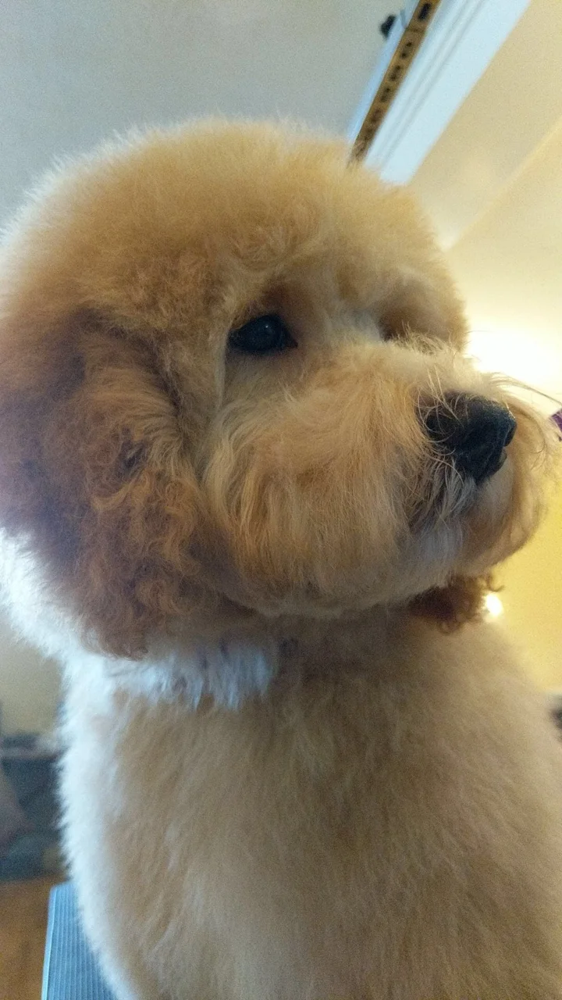
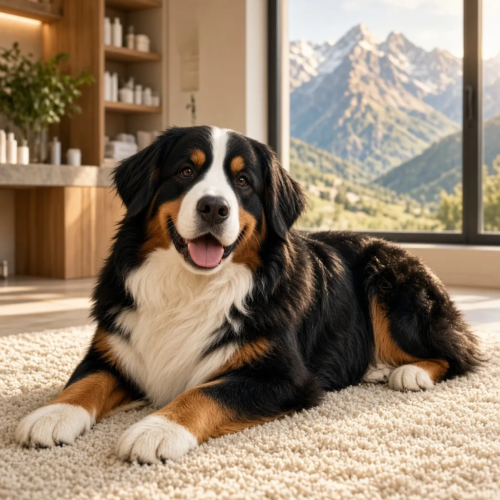
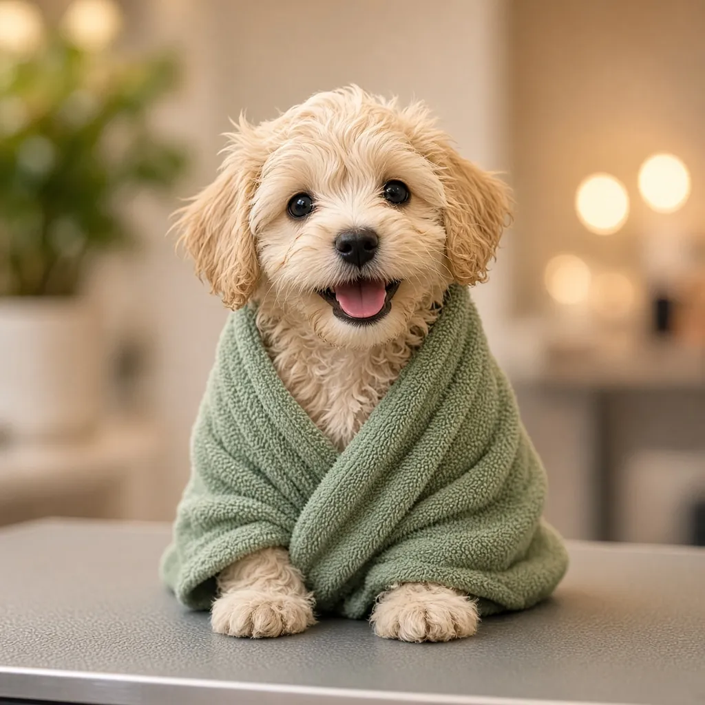
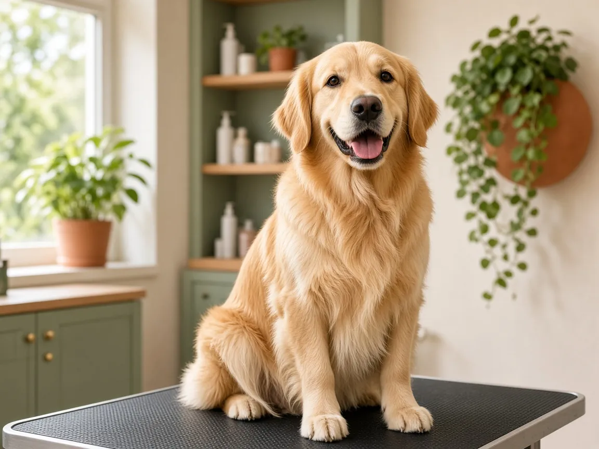
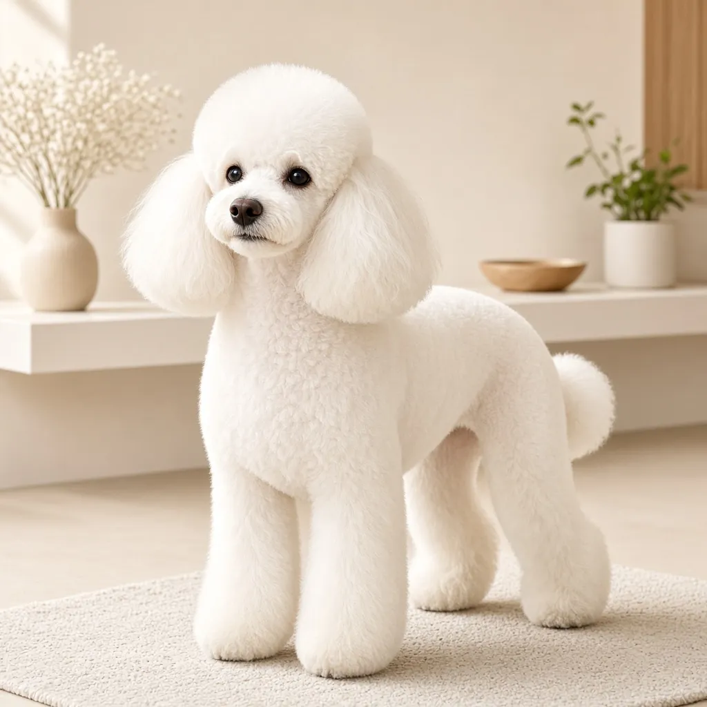

Special Handling
Patient, low-stress techniques for dogs who have had a hard time at the groomer before.
Going Above and Beyond Dog Grooming
Gentle, expert grooming in Sandy & the Salt Lake Valley, with 20+ years of experience and positive, low-stress handling for seniors, disabled, high-anxiety, and aggressive dogs.


Meet your groomer
I've been grooming dogs professionally for 20+ years. I got my start at the PetSmart grooming academy, where I saw a widespread lack of knowledge in "entry-level" grooming. I was thrown to the wolves with only the basics, and that motivated me to keep learning, especially in specialized handling.
Everything I do is built on positive reinforcement and low-stress handling. I've done veterinary grooming, including sedated grooms under veterinary supervision, led grooming teams, owned my own shop, and today I train other groomers. Now I'm excited to care for the dogs of Sandy and the Salt Lake Valley.
My approach is simple: a calm, gentle experience for your dog, a finished groom you'll love, and tips to keep them looking great between visits. That's what I mean by going above and beyond.
Jessica Finch TerraNova
Owner & Groomer, Pawsitive Pet Groomer
My specialty
Some dogs need more than a quick groom. With positive reinforcement and low-stress handling, this is where my experience counts most.
Patient, low-stress techniques for dogs who have had a hard time at the groomer before.
Careful positioning and support for dogs with mobility limits, injuries, or other physical needs, informed by rehabilitation training.
A slow pace, breaks when needed, and behavior-informed handling so nervous dogs can relax.
Gentle, comfortable grooms for older dogs, with extra attention to joints, skin, and stamina.
Experienced, safety-first handling with positive reinforcement, so reactive dogs get groomed without the struggle.
Simple DIY grooming tips to keep your dog comfortable and tidy between appointments.
“Does anyone else smile at dogs when they walk past them, or am I just a weirdo?”
Always learning
Great grooming takes more than the basics. I've continued my education with:
Teaching
I created and taught DIY grooming classes (2015) for the University of Utah's continuing education programs:
Today I also train groomers as a lead trimmer trainer across three Salt Lake-area centers.
What I offer
Every groom is tailored to your dog's coat, breed, and comfort. Contact me for pricing, which depends on size, coat condition, and the service you choose.
A thorough bath with quality shampoo and conditioner, fluff dry, a full brush-out, ear cleaning, and a tidy finish.
Everything in the bath & brush, plus a complete haircut and styling, sanitary trim, paw pads, and nails.
Classic, breed-standard styling, from Poodles and Schnauzers to Doodles and terriers, or a custom look you love.
Quick, gentle nail trims and filing to keep paws healthy and comfortable. A great in-between-grooms visit.
A deep de-shed treatment to remove loose undercoat. Less hair on your couch, a healthier, cooler coat for your dog.
A calm, positive introduction to grooming: gentle handling, a light bath, and a little trim so puppies learn it's fun.
Big, fluffy, double-coated? Bring them on. Huskies, Goldens, Bernese, Newfies, and other gentle giants get the same careful attention.
Why Pawsitive
Two decades of hands-on grooming means I've seen every coat, every breed, and every nervous pup, and I know how to help.
Your dog's comfort comes first. I work at their pace, with breaks when they need them and no rushing.
You'll talk with me directly, before and after every groom, so nothing gets lost in translation.
I currently train groomers as a lead trimmer trainer, and I've taught pet owners through the University of Utah.
Fresh from the table
[Featured photo is Jessica's own work. Other images are samples; replace with your before & after photos.]



Where I groom
Based in the Sandy area and serving dog families across the Salt Lake Valley.
Not sure if you're in the area? Just ask.
[Add grooming location / address, or note if mobile grooming]
For salon owners
Need a vacation? Planning a leave of absence? I offer independent contract fill-in grooming for small, personally owned grooming salons, so your book stays covered and your clients stay happy while you're away.
[Add contract rates / terms and availability]
Good to know
Use the booking form below, call or text 801-577-6782, or email me at Jessica.s.finch@gmail.com. Share your dog's name, breed, size, and the service you're interested in, and I'll get back to you to confirm a time.
Pricing depends on your dog's size, breed, coat condition, and the service. Reach out and I'll give you a quote. [Add pricing or a "starting at" guide]
Most dogs do well with a groom every 4 to 8 weeks, depending on coat type and lifestyle. Dogs with continuously growing coats (like Poodles and Doodles) usually benefit from the shorter end. I'm happy to recommend a schedule for your dog.
Absolutely. Large and giant breeds are welcome, including double-coated breeds that need a thorough de-shed.
Yes, high-anxiety dogs are one of my specialties. I use positive reinforcement and low-stress handling, informed by training with an animal behaviorist, and I go slowly, use gentle handling, and take breaks as needed. Let me know about any sensitivities when you book.
Yes. Seniors and dogs with physical disabilities are a big part of why I pursued specialized handling, including training with a dog rehabilitation therapist. I also have veterinary grooming experience and handle aggressive and reactive dogs safely. Tell me about your dog's needs and I'll plan the groom around their comfort.
Once your puppy has had their vaccinations, a gentle first groom is a great way to build a positive, lifelong relationship with grooming. [Add your vaccination requirements]
[Add hours]
[Add cancellation / late policy]
Book an appointment
Send a request, or call or text 801-577-6782, and I'll reply to confirm your appointment, answer questions, and give you a quote.